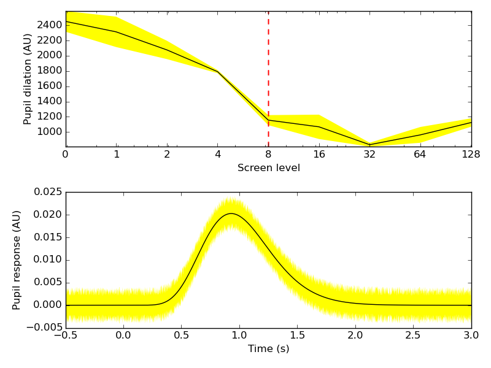

Integration with Eyelink functionality makes programming experiments using eye-tracking simpler.
Script output:
2015-05-18 11:20:44,414 - INFO - Expyfun: Setting up Pyglet audio
2015-05-18 11:20:44,457 - INFO - Expyfun: Setting up screen
2015-05-18 11:20:44,697 - EXP - Expyfun: Set screen visibility True
2015-05-18 11:20:44,710 - INFO - Expyfun: Initializing dummy triggering mode
2015-05-18 11:20:44,714 - INFO - Expyfun: Initialization complete
2015-05-18 11:20:44,714 - EXP - Expyfun: Subject: foo
2015-05-18 11:20:44,714 - EXP - Expyfun: Session: 001
2015-05-18 11:20:44,714 - INFO - EyeLink: Initializing on None
2015-05-18 11:20:44,715 - INFO - Eyelink: Running experiment on a version Dummy tracker.
2015-05-18 11:20:44,833 - INFO - Eyelink: Stopping recording
2015-05-18 11:20:44,834 - INFO - Eyelink: Closing file
2015-05-18 11:20:44,834 - INFO - Eyelink: Stopping recording
2015-05-18 11:20:44,834 - INFO - Eyelink: Closing file
2015-05-18 11:20:44,835 - INFO - Eyelink: Opening remote file with filename 112044
2015-05-18 11:20:45,076 - INFO - EyeLink: Entering calibration
2015-05-18 11:20:45,111 - INFO - EyeLink: Completed calibration
2015-05-18 11:20:45,894 - EXP - Expyfun: Buffer cleared
2015-05-18 11:20:46,894 - EXP - Expyfun: Stamp trial ID to el_id : [1]
2015-05-18 11:20:46,894 - EXP - Expyfun: Stamp trial ID to ec_id : FPDR_01
2015-05-18 11:20:46,894 - EXP - Expyfun: Stamp trial ID to ttl_id : ()
...
Python source code: pupillometry_experiment.py
# Author: Eric Larson <larsoner@uw.edu>
#
# License: BSD (3-clause)
import numpy as np
import matplotlib.pyplot as plt
from expyfun import ExperimentController, EyelinkController
from expyfun.codeblocks import (find_pupil_dynamic_range,
find_pupil_tone_impulse_response)
print(__doc__)
with ExperimentController('pupilExp', full_screen=True, participant='foo',
session='001', output_dir=None) as ec:
el = EyelinkController(ec)
bgcolor, fcolor, lev, resp = find_pupil_dynamic_range(ec, el)
prf, t_srf, e_prf = find_pupil_tone_impulse_response(ec, el, bgcolor,
fcolor)
plt.ion()
uni_lev = np.unique(lev)
uni_lev_label = (255 * uni_lev).astype(int)
uni_lev[uni_lev == 0] = np.sort(uni_lev)[1] / 2.
r = resp.reshape((len(lev) // len(uni_lev), len(uni_lev)))
r_span = [r.min(), r.max()]
# Grayscale responses
ax = plt.subplot(2, 1, 1, xlabel='Screen level', ylabel='Pupil dilation (AU)')
ax.plot([bgcolor, bgcolor], r_span, linestyle='--', color='r')
ax.fill_between(uni_lev, np.min(r, 0), np.max(r, 0), facecolor=(1, 1, 0),
edgecolor='none')
ax.semilogx(uni_lev, np.mean(r, 0), color='k')
ax.set_xlim(uni_lev[[0, -1]])
ax.set_ylim(r_span)
plt.xticks(uni_lev, uni_lev_label)
# PRF
ax = plt.subplot(2, 1, 2, xlabel='Time (s)', ylabel='Pupil response (AU)')
ax.fill_between(t_srf, prf - e_prf, prf + e_prf, facecolor=(1, 1, 0),
edgecolor='none')
ax.plot(t_srf, prf, color='k')
ax.set_xlim(t_srf[[0, -1]])
plt.tight_layout()
Total running time of the example: 31 seconds